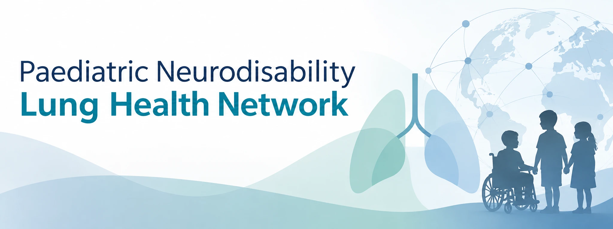

Aspiration & swallowing
Dysphagia, aspiration and their relationship with respiratory health.

Connecting clinicians and researchers to improve respiratory health in children and young people with neurodisability.
The Paediatric Neurodisability Lung Health Network brings together clinicians and researchers interested in respiratory health in children and young people with neurodisability.
We are building a space to exchange knowledge, connect across disciplines and centres, and develop collaborative research. Our focus is on questions that matter in everyday care and on opportunities to learn together.
The network is in its founding phase. We welcome colleagues who would like to help shape its direction.
Our interests span clinical care, research and the experiences of children, young people and their families.
Dysphagia, aspiration and their relationship with respiratory health.
Approaches to supporting cough and airway clearance across care settings.
Understanding infection burden, prevention and management.
Sleep-related breathing difficulties and respiratory support.
Shared questions around saliva, secretions and everyday respiratory care.
Meaningful outcome measures, long-term follow-up and transition to adult services.
Build relationships across specialties, professions and countries.
Exchange ideas, discuss challenges and identify opportunities to work together.
Bring complementary expertise together around shared research questions.
Work towards shared priorities, harmonised approaches and meaningful outcome measures.
–
Our first meeting will be an opportunity to introduce interests, discuss priorities and explore next steps together.
The meeting link will be shared with those who register for the network.
Register for the networkActivities will develop with members’ interests and contributions.
Are you a clinician or researcher with an interest in paediatric neurodisability and lung health? We would be pleased to hear from you.
To express your interest in joining, please complete our Google Form.
Complete the interest formThe form opens in Google Forms. Please share professional details only, without patient-identifiable information.
For questions about the network, meeting enquiries or potential collaborations:
Nadine Freitag
Nadine.Freitag@hhu.de